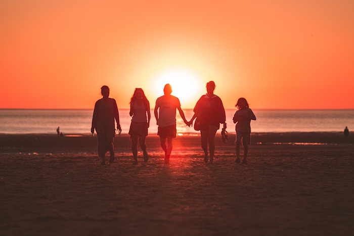

I am the only child in my family and I love it. I don't have to share or fight with siblings. I don't get lonely because I have a loving cat named TJ and she gives me lots of company. I have two amazing parents of different races. My mom is African-American and my dad is Caucasian. I adore my family more than anything in the world.

One skill that I have picked up over the course of being in ATM is typing. I have exceeded the 7th grade typing goal of 45 words per minute (wpm) and am working towards getting to the 8th grade goal of 60 wpm.
A hobby that I do in my spare time is drawing. It can be frustrating at times but it's interesting to see a blank page transform in to a colorful piece of art. The end result makes me satisfied and proud of myself for being able to make something so complex.
An interest I have is traveling. I find it very fascinating to see different cultures in different countries. I have been to four countries other than the U.S. and this summer I will be touching upon eight more: England, Germany, Denmark, Estonia, Russia, Finland, Sweden, and France. I can’t wait to travel to more countries around the world.